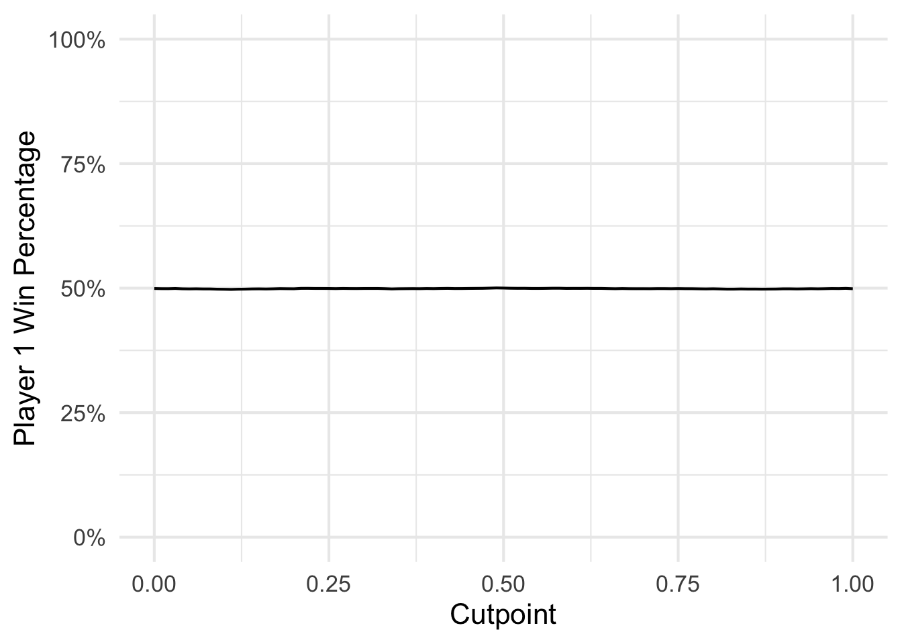
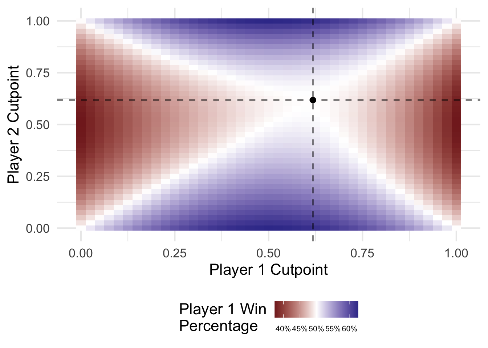

library(dplyr)
library(magrittr)
library(ggplot2)
set.seed(123)
theme_set(theme_minimal(base_size = 16))
# number of rounds to play
n_draw <- 100000Can You Win This Hot New Game Show?
r
riddler
Expanding on the Riddler’s Problem
NoteCode updated
This post was originally written in 2016 and was last rendered under R 4.0.4. The code has been minimally updated to run under R 4.6.1: dplyr::tbl_df(), defunct since dplyr 1.0.0, was replaced with tibble::as_tibble(). The analysis and its conclusions are unchanged.
So the latest Riddler puzzle on FiveThirtyEight goes like this:
Two players go on a hot new game show called “Higher Number Wins.” The two go into separate booths, and each presses a button, and a random number between zero and one appears on a screen. (At this point, neither knows the other’s number, but they do know the numbers are chosen from a standard uniform distribution.) They can choose to keep that first number, or to press the button again to discard the first number and get a second random number, which they must keep. Then, they come out of their booths and see the final number for each player on the wall. The lavish grand prize — a case full of gold bullion — is awarded to the player who kept the higher number. Which number is the optimal cutoff for players to discard their first number and choose another? Put another way, within which range should they choose to keep the first number, and within which range should they reject it and try their luck with a second number?
My initial thought was to try and solve this problem via simulation. The following code will generate 100,000 rounds of play between two players. For the sake of efficiency, we will draw twice for each player now and consider how the selection of the first or second number influences the outcome of the game.
p1 <- cbind(runif(n_draw), runif(n_draw))
p2 <- cbind(runif(n_draw), runif(n_draw))
head(p1) [,1] [,2]
[1,] 0.28758 0.60241
[2,] 0.78831 0.02285
[3,] 0.40898 0.82056
[4,] 0.88302 0.03657
[5,] 0.94047 0.23505
[6,] 0.04556 0.87054head(p2) [,1] [,2]
[1,] 0.6045 0.79293
[2,] 0.5197 0.22926
[3,] 0.9664 0.75221
[4,] 0.8040 0.14595
[5,] 0.4763 0.93226
[6,] 0.8904 0.05215Naive Players
The key thing to realize is that if the players adopt the same strategy, each player will always have a 50% chance of victory. Let’s consider a very simple strategy first: no matter what happens, always keep the first number. After all, the number is generated randomly so there is no guarantee that the second number will be larger than the first number. How well does player 1 do if both players employ this strategy?
sum(p1[,1] > p2[,1]) / n_draw[1] 0.4993With this strategy, each player has a roughly 50% chance of winning the game. We can also see this is the same if each player always takes the second number.
sum(p1[,2] > p2[,2]) / n_draw[1] 0.4988Okay, so this strategy is a bit naive. Why not be more sophisticated? Perhaps instead, players will only take the second number if their first number is low. An arbitrary cutpoint might be .5. That is, if either player gets a number less than .5 in the first draw, they will take whatever they get in the second draw. How does this strategy work? Here I write a short function to select the appropriate value from each round based on a specified cutpoint.
cutoff <- function(draw, cutpoint = .5){
ifelse(draw[, 1] < cutpoint, draw[, 2], draw[, 1])
}
sum(cutoff(p1) > cutoff(p2)) / n_draw[1] 0.5002Because each player chose a cutpoint of .5, their probability of winning is still 50%.
This applies to all cutpoints, as long as both players select the same cutpoint.
cutpoints <- seq(0, 1, by = .01)
results <- lapply(cutpoints,
function(cutpoint) sum(cutoff(p1, cutpoint = cutpoint) >
cutoff(p2, cutpoint = cutpoint))) %>%
unlist
results_full <- data_frame(cutpoint = cutpoints,
win = results,
win_prop = win / n_draw)Warning: `data_frame()` was deprecated in tibble 1.1.0.
ℹ Please use `tibble()` instead.results_full# A tibble: 101 × 3
cutpoint win win_prop
<dbl> <int> <dbl>
1 0 49928 0.499
2 0.01 49897 0.499
3 0.02 49892 0.499
4 0.03 49931 0.499
5 0.04 49870 0.499
6 0.05 49850 0.498
7 0.06 49869 0.499
8 0.07 49842 0.498
9 0.08 49840 0.498
10 0.09 49794 0.498
# ℹ 91 more rowsggplot(results_full, aes(cutpoint, win_prop)) +
geom_line() +
scale_y_continuous(labels = scales::percent, limits = c(0, 1)) +
labs(x = "Cutpoint",
y = "Player 1 Win Percentage")
Strategic Players
Okay, so the issue with this analysis thus far is that this assumes the same strategies by both players. What would happen if two players do not use the same cutpoint? After all, the players cannot communicate with one another so there is no reason to expect that they would choose the same cutpoint. Let’s consider what happens if player 1 takes the second number if her first number is less than .5, but player 2 only takes the second number if his first number is less than .9.
cutoff_2 <- function(p1, p2, cut1 = .5, cut2 = .5){
sum(cutoff(p1, cutpoint = cut1) > cutoff(p2, cutpoint = cut2))
}
cutoff_2(p1, p2, cut1 = .5, cut2 = .9) / n_draw[1] 0.5688Hmm, now we’re on to something. Player 1 wins 57% of the rounds. But what if Player 2 knows this and adjusts his cutpoint? And Player 1, expecting this, adjusts her’s? Essentially, we want to determine the equilibrium strategy for this game.
Analytical Solution
So full disclosure: I didn’t do the math on this one. md46135 did the calculus and the full explanation can be found here. The full probability equation is as follows (here, player 1 is named hero and player 2 is named villain):
This is the joint probability of victory for player 1 (or the hero) given four potential states: hero and villain both keep their first numbers, hero keeps her first and villian keeps his second, hero keeps her second and villain keeps his first, and both hero and villain keep their second numbers. In order to calculate the equilibrium strategy for both players, calculate the partial derivatives with respect to h and v:
\[\frac{\partial \Pr(H = 1)}{\partial h} = \frac{1}{2} (-3h^2 + 2hv -v + 1)\]
\[\frac{\partial \Pr(H = 1)}{\partial v} = \frac{1}{2} (h^2 - h + 2v - 1)\]
Then set each derivative equal to 0, and solve for the appropriate values of h and v.
\[h = \frac{\sqrt{5}}{2} - \frac{1}{2}, v = \frac{\sqrt{5}}{2} - \frac{1}{2} \]
Simulation Solution
We can also use R to find this solution via Monte Carlo simulation. This I solved for myself. Essentially we do a grid search over possible combinations of two player cutpoints and find the values which leave each player winning as close to 50% of the rounds as possible.
cut_lite <- seq(0, 1, by = .025)
cut_combo <- expand.grid(cut_lite, cut_lite) %>%
as_tibble() %>%
rename(cut1 = Var1, cut2 = Var2) %>%
mutate(p1_win = apply(., 1, FUN = function(x) cutoff_2(p1, p2, cut1 = x[1], cut2 = x[2])),
p1_prop = p1_win / n_draw)
cut_combo# A tibble: 1,681 × 4
cut1 cut2 p1_win p1_prop
<dbl> <dbl> <int> <dbl>
1 0 0 49928 0.499
2 0.025 0 51161 0.512
3 0.05 0 52259 0.523
4 0.075 0 53336 0.533
5 0.1 0 54316 0.543
6 0.125 0 55302 0.553
7 0.15 0 56279 0.563
8 0.175 0 57132 0.571
9 0.2 0 57917 0.579
10 0.225 0 58696 0.587
# ℹ 1,671 more rowsggplot(cut_combo, aes(cut1, cut2, fill = p1_prop)) +
geom_raster() +
# geom_line(data = results_full, aes(cutpoint, cutpoint, fill = NULL)) +
geom_vline(xintercept = sqrt(5) / 2 - (1 / 2), linetype = 2, alpha = .5) +
geom_hline(yintercept = sqrt(5) / 2 - (1 / 2), linetype = 2, alpha = .5) +
geom_point(data = data_frame(x = sqrt(5) / 2 - (1 / 2),
y = sqrt(5) / 2 - (1 / 2)),
aes(x, y, fill = NULL)) +
scale_fill_gradient2(midpoint = .5, labels = scales::percent) +
labs(x = "Player 1 Cutpoint",
y = "Player 2 Cutpoint",
fill = "Player 1 Win\nPercentage") +
theme(legend.position = "bottom",
legend.text = element_text(size = 8))
As can be seen above, if either player adjusts his or her strategy, then one of them will be more successful in the long run. In order to maintain the balance, each player should discard their first number if it is less than approximately 0.618.
Session Info
─ Session info ───────────────────────────────────────────────────────────────
setting value
version R version 4.6.1 (2026-06-24)
os macOS Tahoe 26.6.1
system aarch64, darwin23
ui X11
language (EN)
collate en_US.UTF-8
ctype en_US.UTF-8
tz America/New_York
date 2026-08-12
pandoc 3.4 @ /usr/local/bin/ (via rmarkdown)
quarto 1.10.18 @ /usr/local/bin/quarto
─ Packages ───────────────────────────────────────────────────────────────────
! package * version date (UTC) lib source
P cli 3.6.6 2026-04-09 [?] RSPM
P codetools 0.2-20 2024-03-31 [?] CRAN (R 4.6.1)
P digest 0.6.39 2025-11-19 [?] RSPM
P dplyr * 1.2.1 2026-04-03 [?] RSPM
P evaluate 1.0.5 2025-08-27 [?] RSPM
P farver 2.1.2 2024-05-13 [?] RSPM
P fastmap 1.2.0 2024-05-15 [?] RSPM
P generics 0.1.4 2025-05-09 [?] RSPM
P ggplot2 * 4.0.3 2026-04-22 [?] RSPM
P glue 1.8.1 2026-04-17 [?] RSPM
P gtable 0.3.6 2024-10-25 [?] RSPM
P htmltools 0.5.9 2025-12-04 [?] RSPM
P jsonlite 2.0.0 2025-03-27 [?] RSPM
P knitr 1.51 2025-12-20 [?] RSPM
P labeling 0.4.3 2023-08-29 [?] RSPM
P lifecycle 1.0.5 2026-01-08 [?] RSPM
P magrittr * 2.0.5 2026-04-04 [?] RSPM
P otel 0.2.0 2025-08-29 [?] RSPM
P pillar 1.11.1 2025-09-17 [?] RSPM
P pkgconfig 2.0.3 2019-09-22 [?] RSPM
P R6 2.6.1 2025-02-15 [?] RSPM
P RColorBrewer 1.1-3 2022-04-03 [?] RSPM
renv 1.2.4 2026-08-03 [1] RSPM (R 4.6.0)
P rlang 1.3.0 2026-07-05 [?] RSPM
P rmarkdown 2.31 2026-03-26 [?] RSPM
P S7 0.2.2 2026-04-22 [?] RSPM
P scales 1.4.0 2025-04-24 [?] RSPM
P sessioninfo 1.2.4 2026-06-04 [?] RSPM
P tibble 3.3.1 2026-01-11 [?] RSPM
P tidyselect 1.2.1 2024-03-11 [?] RSPM
P vctrs 0.7.3 2026-04-11 [?] RSPM
P withr 3.0.3 2026-06-19 [?] RSPM
P xfun 0.60 2026-07-09 [?] RSPM
P yaml 2.3.12 2025-12-10 [?] RSPM
[1] /Users/bcs88/Projects/personal-site/renv/library/macos/R-4.6/aarch64-apple-darwin23
[2] /Users/bcs88/Library/Caches/org.R-project.R/R/renv/sandbox/macos/R-4.6/aarch64-apple-darwin23/46003b10
* ── Packages attached to the search path.
P ── Loaded and on-disk path mismatch.
──────────────────────────────────────────────────────────────────────────────